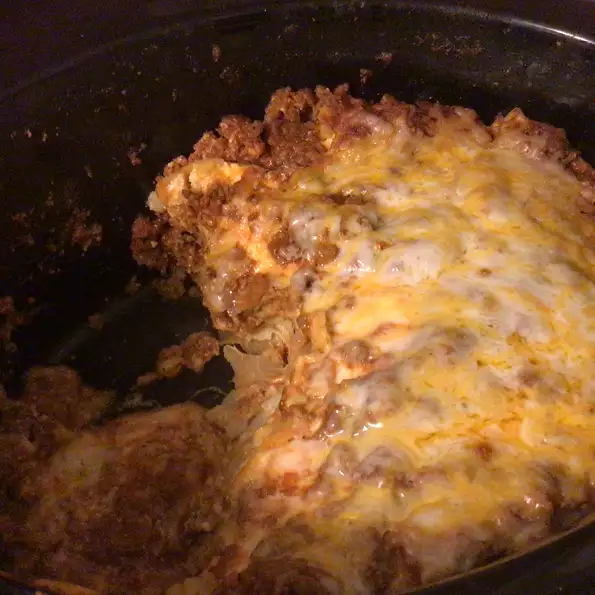

Slow Cooker Lasagna

Description
See
recipe
Ingredients
- ½ pound Italian sausage, casings removed
- 1 (12 ounce) package lasagna noodles
- 1 (29 ounce) can tomato sauce
Steps
-
Spoon a layer of the meat mixture onto the bottom of the slow cooker.
Add a double layer of the uncooked lasagna noodles. Break to fit noodles
into slow cooker. Top noodles with a portion of the cheese mixture.
Repeat the layering of sauce, noodles, and cheese until all the
ingredients are used.
- Cover, and cook on LOW setting for 4 to 6 hours.
Return to main page